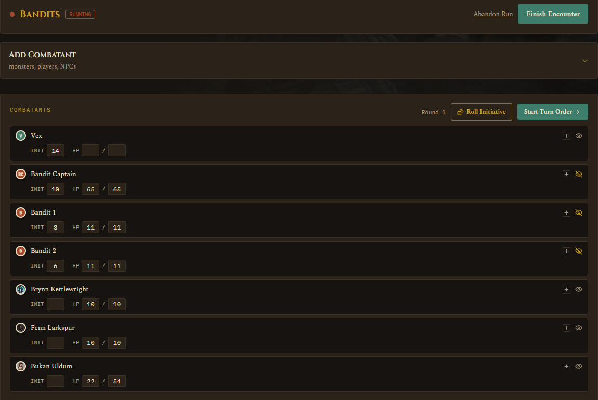
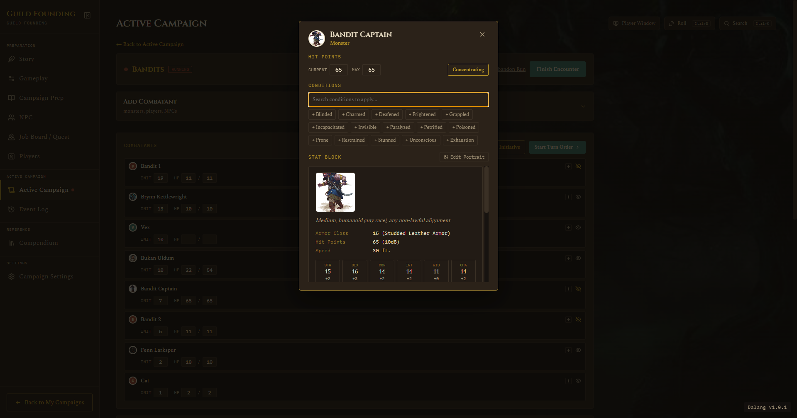
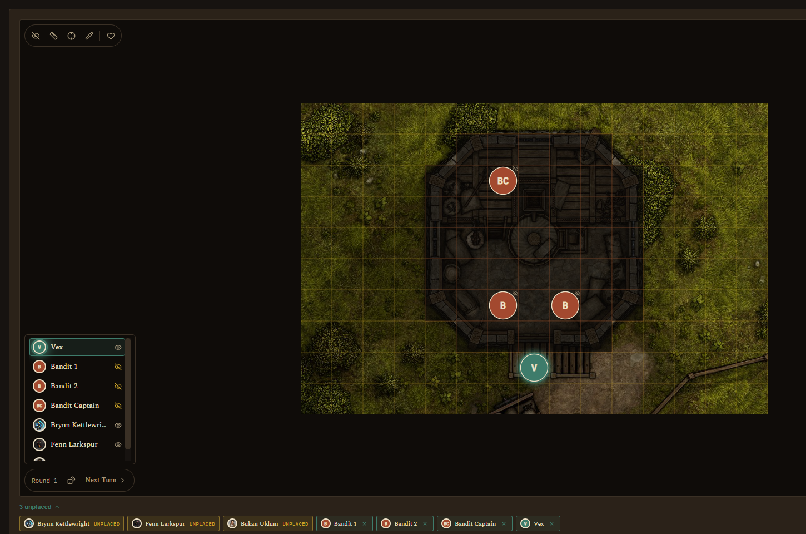

Running a Live Session
Running a Session · Running a Live Session
On this page Starting a run During combat Map tools Focus Mode Ending a run
Open the Active Campaign tab. If nothing's running, you'll see the hub screen: current location, party present, prepared encounters for this location, maps, NPCs present, active quests, and a quick "Log This Moment" box for jotting things down as they happen without leaving the tab. If the current location has no background image of its own, the hub falls back to the campaign's own background image (set in Campaign Settings) instead of going flat.
Starting a run
Two ways to begin:
- Start on a prepared (or ad-hoc) encounter. This snapshots the party and monster placements, rolls initiative automatically for monsters and NPCs, and resets that map's fog to whatever you set as the baseline.
- Explore on a map, for scenes without combat. No initiative, no HP tracking. If the party already explored this map before, it resumes wherever they left off, positions carry over between sessions.
You can start an encounter mid-exploration too, the app will ask you to confirm and logs the interruption automatically.

During combat
The live run screen adds:
- Add Combatant: pull in players, monsters, NPCs (including any NPC linked to a Compendium monster, see NPC), or homebrew stat blocks mid-fight.
- Combatants / Initiative Tracker: roll initiative with one click (auto-rolled for monsters and NPCs, left blank for players so you can enter what they report), then use Next Turn to step through the round.
- Battle Map: the shared placement grid, now with live tools bolted onto it. Drag tokens to move them, they snap to the grid.
- Combat Log: a private scratchpad, separate from the permanent Event Log, that auto-notes HP and condition changes plus anything you type in manually. This resets when the fight ends and doesn't pollute the permanent record.
Each row in the Combatants list also has its own quick controls now: a small "+" opens a condition search right there, applied conditions get a small × to remove, and a hide-from-players eye icon sits right on the row too, no need to open the full token popup just to toggle those.
Click any token to get a small popup with quick actions (nudge HP, hide from players, lock its position) and a button into the full Quick-Info view (HP, conditions, concentration toggle, stat block for SRD and homebrew monsters, and for any NPC linked to one).


If a monster shows up without a portrait, an unplanned random encounter, something pulled off a table mid-session, you don't have to leave the Battle Map to fix it. Open its Quick-Info popup and click Edit Portrait right above the stat block, paste a URL or Browse to a local file, same as everywhere else. It updates that monster everywhere it's placed, not just the one token you clicked.

Map tools during a run
A small toolbar sits directly on the map:
- Edit Fog: reveal or hide cells live as the party explores.
- Ruler: click and drag to measure real distance in feet, fades a few seconds after you let go.
- Ping: click to pulse a spot for everyone watching, including the Player Window.
- Draw: pen, line, rectangle, circle, or cone, useful for marking spell areas or sketching a rough plan. Unlike ruler and ping, drawings stick around until you clear them.
- Roll dice: opens the same global dice tray reachable everywhere else, see Dice Roller. It has its own icon here because Focus Mode covers the header's Roll button.
- Focus Mode: see below.
- HP Visibility: choose whether player, NPC, or monster HP numbers are visible on the Player Window. Off by default.

Focus Mode
Expands the map to fill nearly the whole window, fading out the sidebar and other cards. Good for when you just want the map big during a tense moment. Click again to exit, it restores your exact scroll position and zoom.
Focus Mode has its own turn controls now, so you don't have to leave it just to run the fight. A fixed-width order list sits in the bottom-left corner: portraits, long names truncated instead of overflowing, the current turn highlighted, and anyone who's already acted this round dimmed and set off by a divider line. You can toggle hide-from-players right on each row there too. Round, Roll Initiative, and Next Turn sit alongside it, labeled with text rather than just an icon.
Finish and Abandon live in the top-right toolbar while in Focus Mode, Abandon on the left, Finish on the right in solid teal, matching the same layout the normal header already uses. HP Visibility moved into the top-left tool pill alongside Edit Fog, Ruler, Ping, and Draw, so the top-right toolbar is just session controls.

See also: The Player Window, which shows its own turn order panel to players at the same time.
Ending a run
Finish Encounter (or End Exploration) writes one entry to the permanent Event Log. You can add a summary, or leave it blank for an auto-generated note. If you just want to bail without any record at all, there's a separate, quieter Abandon Run link.